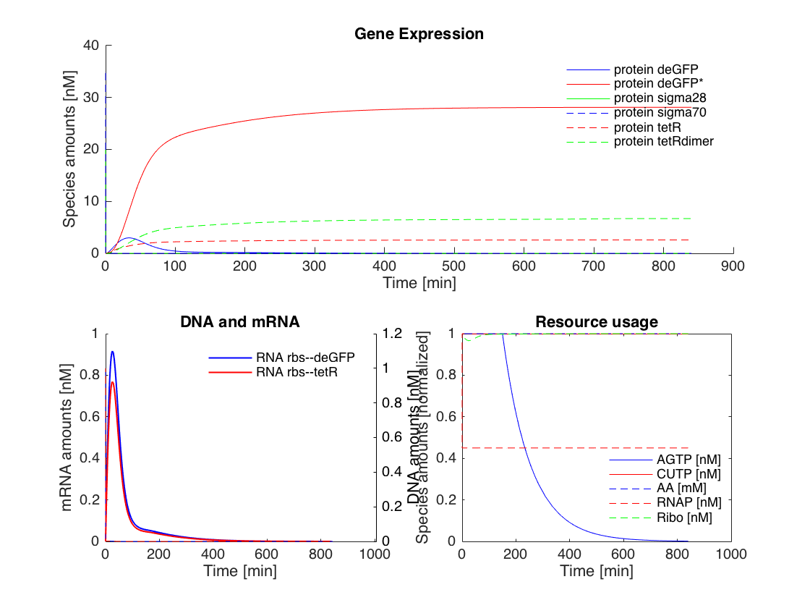
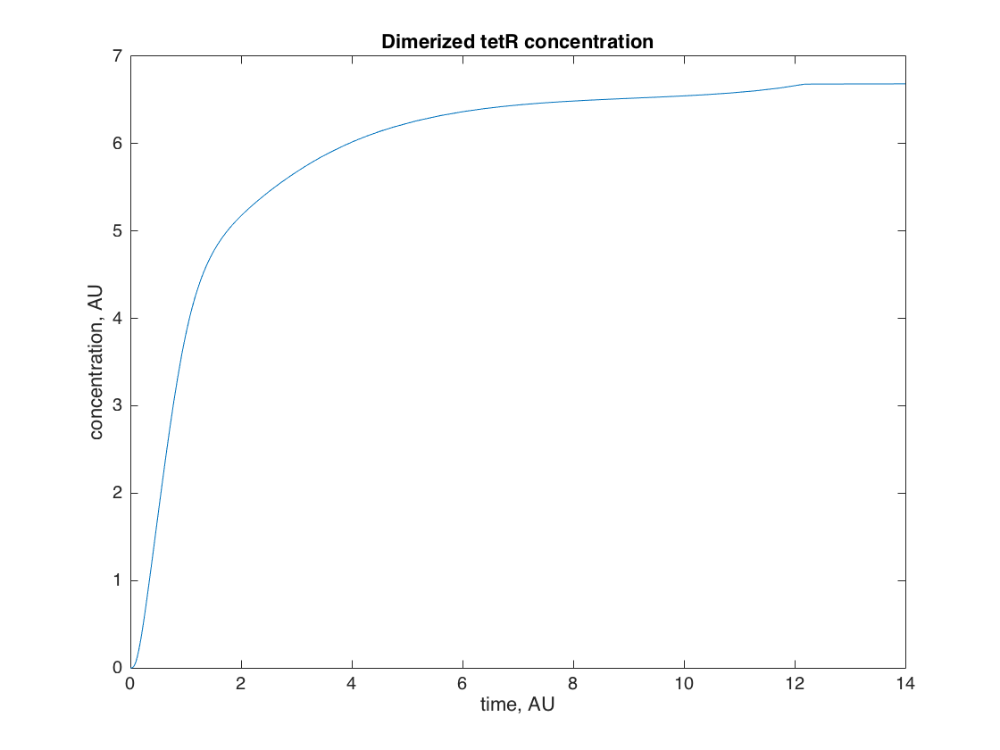

TXTL Tutorial
txtl_tutorial.m - basic usage of the TXTL modeling toolbox Vipul Singhal, 28 July 2017
This file contains a simple tutorial of the TXTL modeling toolbox. You will learn about setting up a negative autoregulation circuit, simulating it, plotting the results, creating variations of the circuit, and understanding the object structure of the models.
Contents
Initializing the toolbox
Use this command to add the subdirectories needed to your matlab path. To be run each time you begin a new TXTL toolbox session.
txtl_init;
Negative Autoregulation - A simple example
Here we demonstrate the setup of a genetic circuit where a transcription factor represses its own expression.
Set up the standard TXTL tubes These load up the RNAP, Ribosome and degradation enzyme concentrations ``E30VNPRL'' refers to a configuration file
tube1 = txtl_extract('E30VNPRL'); tube2 = txtl_buffer('E30VNPRL'); % Now set up a tube that will contain our DNA tube3 = txtl_newtube('gene_expression'); % Define the DNA strands, and all the relevant reactions txtl_add_dna(tube3, 'ptet(50)', 'rbs(20)', 'tetR(1200)', 1, 'plasmid'); txtl_add_dna(tube3, 'ptet(50)', 'rbs(20)', 'deGFP(1000)', 1, 'plasmid'); % Mix the contents of the individual tubes Mobj = txtl_combine([tube1, tube2, tube3]); % Run a simulaton % % At this point, the entire experiment is set up and loaded into 'Mobj'. % So now we just use standard Simbiology and MATLAB commands to run % and plot our results! cs = getconfigset(Mobj); set(cs.RuntimeOptions, 'StatesToLog', 'all'); tic [simData] = txtl_runsim(Mobj,14*60*60); toc t_ode = simData.Time; x_ode = simData.Data;
Elapsed time is 1.134961 seconds.
plot the result
The following function plots the proteins, RNA and resources in the toolbox. In the next section we delve deeper into the object oriented structure of the model, and how to plot arbitrary species in the model.
txtl_plot(simData,Mobj);
Current plot held
Model Structure
The model is organized as a model object, with sub objects specifying Parameters, Reactions, Species, etc. Type in
Mobj
SimBiology Model - mix_of_E30VNPRL_E30VNPRL_gene_expression
Model Components:
Compartments: 1
Events: 2
Parameters: 73
Reactions: 47
Rules: 0
Species: 43
There is one comaprtment, 2 events, 73 parameters, 47 Reactions, no rules and 43 Species in the toolbox. We can explore further by typing, for example,
Mobj.Species
SimBiology Species Array Index: Compartment: Name: InitialAmount: InitialAmountUnits: 1 contents RNAP 100 2 contents protein sigma70 35 3 contents protein sigma28 20 4 contents Ribo 50 5 contents RNAP70 0 6 contents RNase 100 7 contents AGTP 3.18005e+06 8 contents CUTP 1.90803e+06 9 contents AA 3.18005e+07 10 contents protein tetR 0 11 contents aTc 0 12 contents protein tetRdimer 0 13 contents RNA rbs--tetR 0 14 contents Ribo:RNA rbs--tetR 0 15 contents DNA ptet--rbs--tetR 1 16 contents RNAP70:DNA ptet--rbs--tetR 0 17 contents CUTP:AGTP:RNAP70:DNA ptet--rbs--tetR 0 18 contents term_RNAP70:DNA ptet--rbs--tetR 0 19 contents AA:AGTP:Ribo:RNA rbs--tetR 0 20 contents protein deGFP 0 21 contents protein deGFP* 0 22 contents RNA rbs--deGFP 0 23 contents Ribo:RNA rbs--deGFP 0 24 contents DNA ptet--rbs--deGFP 1 25 contents RNAP70:DNA ptet--rbs--deGFP 0 26 contents CUTP:AGTP:RNAP70:DNA ptet--rbs--deGFP 0 27 contents term_RNAP70:DNA ptet--rbs--deGFP 0 28 contents AA:AGTP:Ribo:RNA rbs--deGFP 0 29 contents RNAP28 0 30 contents 2 aTc:protein tetRdimer 0 31 contents AGTP:RNAP70:DNA ptet--rbs--tetR 0 32 contents CUTP:RNAP70:DNA ptet--rbs--tetR 0 33 contents DNA ptet--rbs--tetR:protein tetRdimer 0 34 contents RNA rbs--tetR:RNase 0 35 contents AA:AGTP:Ribo:RNA rbs--tetR:RNase 0 36 contents Ribo:RNA rbs--tetR:RNase 0 37 contents AGTP:RNAP70:DNA ptet--rbs--deGFP 0 38 contents CUTP:RNAP70:DNA ptet--rbs--deGFP 0 39 contents DNA ptet--rbs--deGFP:protein tetRdimer 0 40 contents RNA rbs--deGFP:RNase 0 41 contents AA:AGTP:Ribo:RNA rbs--deGFP:RNase 0 42 contents Ribo:RNA rbs--deGFP:RNase 0 43 contents AGTP_UNUSE 0
We see that there are 43 species in the model, and they have somewhat different syntax for specification. Proteins, RNA and DNA generally follow the convention protein CDS, RNA 5'UTR--CDS, DNA promoter--5' UTR--CDS, with variations possible. There are also simply named `core' species like RNAP, Ribo, RNase, etc. Finally we denote bound complexes with a colon, for example, Species 1:Species 2.
We also see that each of them has certain other associated properties. You can explore further by accessing individual species using their index, and using the `get' and `set' commands to get and set the properties of the species. For example, try typing
Mobj.Species(1)
SimBiology Species Array Index: Compartment: Name: InitialAmount: InitialAmountUnits: 1 contents RNAP 100
This gives you the first species in the model. You can find out what properties as associated with this species by typing in
get(Mobj.Species(1))
Annotation: ''
BoundaryCondition: 0
ConstantAmount: 0
InitialAmount: 100.0001
InitialAmountUnits: ''
Name: 'RNAP'
Notes: ''
Parent: [1x1 SimBiology.Compartment]
Tag: ''
Type: 'species'
UserData: []
and then using the set command to set its initial concentration to 50 units:
set(Mobj.Species(1), 'InitialAmount', 50)
Learn more about the get and set commands by typing in
help get help set
You may read more about how model objects are arranged in Simbiology by working through the Tutorial. Feel free to browse the reactions and other subproperties by individually typing in commands like
Mobj.reactions get(Mobj.Reactions) get(Mobj.Reactions(1)) Mobj.Reactions(1).ReactionRate Mobj.Reactions(1).KineticLaw get(Mobj.Reactions(1).KineticLaw)
and so on.
Plotting individual species
You can also plot the trajectories of any of the species in the model. Use the function findspecies to get the index of the species object of interest. For example, if you want to plot the trajectory of the dimerized tetR protein, you could type in
tetRindex = findspecies(Mobj, 'protein tetRdimer'); figure plot(simData.Time/3600, simData.data(:,tetRindex)); title('Dimerized tetR concentration') ylabel('concentration, AU') xlabel('time, AU') curraxis = axis; axis([curraxis(1:2) 0 curraxis(4)]) %
EMACS editor support (ignore)
Automatically use matlab mode in emacs (keep at end of file) Local variables: mode: matlab End: